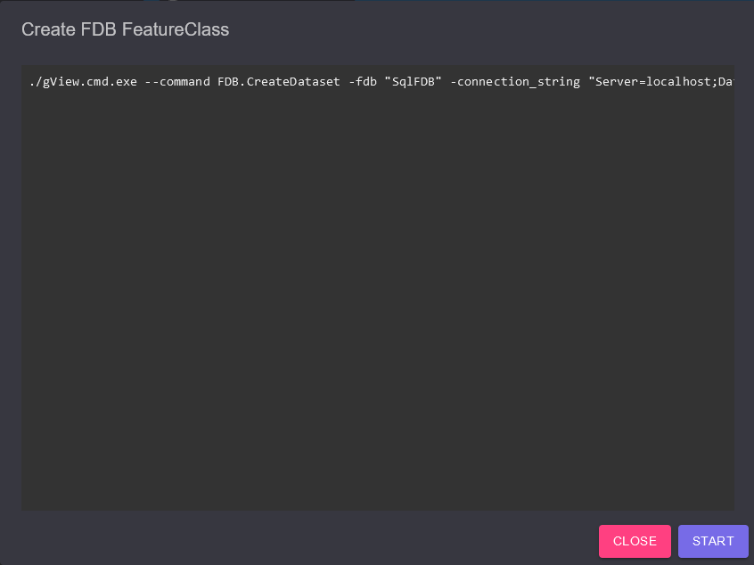

gView Command Line Tools¶
Here are some command line tools for gView GIS introduced to automate recurring operations.
The command line tools are located in the installation path in the directory web. This absolute
path must always be prepended to the commands shown here, or a reference must be made via the PATH
environment variable.
The gView.WebApps and gView.DataExplorer partially use the command line tools, which is why they can also be found in this path. When the gView.WebApps call command line tools, this is recognized by dialogs like this one:
Here are the command lines that need to be executed for the desired action.
(for example, a script to create a Feature Dataset in the gView Feature Database).
With the Start button, the commands are executed and the output is redirected to this window.
Note
The advantage of displaying the commands is that they can be marked as text and copied from this dialog. This allows the commands to be executed directly on the server later. Recurring tasks can thus be easily automated.
Run gView Command Line Tool¶
The structure of the command line tools is always the same. The entry point is the command line tool gView.Cmd.exe. When you call the tool without further parameters, you get approximately the following output:
>> .\gView.Cmd.exe
Usage: gView.Cmd --command [command] [...arguments...]
gView.Cmd --command [command] --help
Use one of the following commands:
ElasticSearch.Fill: Fills an ElasticSearch index using defintion from an json file
FDB.CreateDataset: Creates a new gView Feature Database FeatureClass
FDB.CreateFeatureClass: Creates a new gView Feature Database FeatureClass
FDB.CreateNetworkClass: Creates a new gView Feature Database NetworkClass
FDB.ImageDatasetUtil: Working wigh FDB Image Datasets
FDB.RebuildSpatiallIndexDef: Rebuild spatial index of a featureclasses
FDB.RepairSpatialIndex: Repair spatial index of a featureclasses
FDB.ShrinkDatasetSpatialIndex: Shrink spatial index of all featureclasses in a dataset
FDB.ShrinkFeatureClassSpatialIndex: Shrink spatial index of a featureclasses
FDB.TruncateFeatureClass: Truncate featureclasses
LuceneServer.Fill: Fills a lucene server index using defintion from an json file
MxlUtil.FromGLStylesJson: Creates a MXL file from a (TileCache) styles json definition
MxlUtil: Run a mxl uitilty
TileCache.ClipCompact: Clips a tile compact cache by polygon(s)
TileCache.Render: Forces a gView Server instance to render service a tile cache
To call a specific command, the command must always be passed with the parameter --command:
>> .\gView.Cmd.exe --command TileCache.Render
ERROR: parameter server is required
If a command is not given all the necessary parameters, the program will terminate.
Here, the first necessary parameter is indicated with the error message parameter required.
If you want to see all the parameters required for a command, you also need to pass
the parameter --help:
>> .\gView.Cmd.exe --command TileCache.Render --help
Help: TileCache.Render
Forces a gView Server instance to render service a tile cache
Usage:
-server: gView Server Instance, eg. https://my-server/gview-server
-service: The service to pre-render, eg. folder@servicename
-epsg: EPSG Code [default: first]
-compact: create a compact tile cache
-orientation: Orientation of origin [default: UpperLeft]
-imageformat: Imageformat: <png|jpg>
-bbox_minx: Minimum X Coordinate
-bbox_miny: Minimum Y Coordinate
-bbox_maxx: Maximum X Coordinate
-bbox_maxy: Maximum Y Coordinate
-scales: Scales to render <scale-dominator1,scale2-dominator2> [default: all scales]
-threads: Maximum parallel requests [default: 1]
Command Line Tools (Interactive Mode)¶
gView.Cmd.Exe can also be started in the so-called interactive mode. The following call is sufficient:
>> .\gView.Cmd.exe -i
Interactive mode: type command with arguments
Usage: [command] [...arguments...]
[command] --help
help ... show this message
quit ... quit programm
clear ... clear console window
Use one of the following commands:
ElasticSearch.Fill: Fills an ElasticSearch index using defintion from an json file
FDB.CreateDataset: Creates a new gView Feature Database FeatureClass
FDB.CreateFeatureClass: Creates a new gView Feature Database FeatureClass
FDB.CreateNetworkClass: Creates a new gView Feature Database NetworkClass
FDB.ImageDatasetUtil: Working wigh FDB Image Datasets
FDB.RebuildSpatiallIndexDef: Rebuild spatial index of a featureclasses
FDB.RepairSpatialIndex: Repair spatial index of a featureclasses
FDB.ShrinkDatasetSpatialIndex: Shrink spatial index of all featureclasses in a dataset
FDB.ShrinkFeatureClassSpatialIndex: Shrink spatial index of a featureclasses
FDB.TruncateFeatureClass: Truncate featureclasses
LuceneServer.Fill: Fills a lucene server index using defintion from an json file
MxlUtil.FromGLStylesJson: Creates a MXL file from a (TileCache) styles json definition
MxlUtil: Run a mxl uitilty
TileCache.ClipCompact: Clips a tile compact cache by polygon(s)
TileCache.Render: Forces a gView Server instance to render service a tile cache
Command:>
The advantage of the interactive mode is that the program does not close. Commands can be entered
directly here. The prefix gView.Cmd.exe --command is not necessary.
In addition to the entered commands, there are the following commands in interactive mode:
help: Displays the list of commands and a brief description.
quit: Ends gView.Cmd and the interactive mode.
clear: Clears the content of the console window.
The invocation of a command in interactive mode looks approximately like this:
Command:>LuceneServer.Fill --help
Help: LuceneServer.Fill
Fills a lucene server index using defintion from an json file
Usage:
-json: Json File with import definition
-package-size: optional: number of items sended to lucene server per request (default 50000)
-basic-auth-user: optional: User for basic authentication
-basic-auth-pwd: optional: User password for basic authentication
-proxy-url: optional: a proxy server
-proxy-user: optional: a proxy server user
-proxy-pwd: optional: a proxy server user password
Command:>LuceneServer.Fill -json "c:\temp\...." -package-size 25000
...
The following describes some command line tools by example:
Table of Contents: